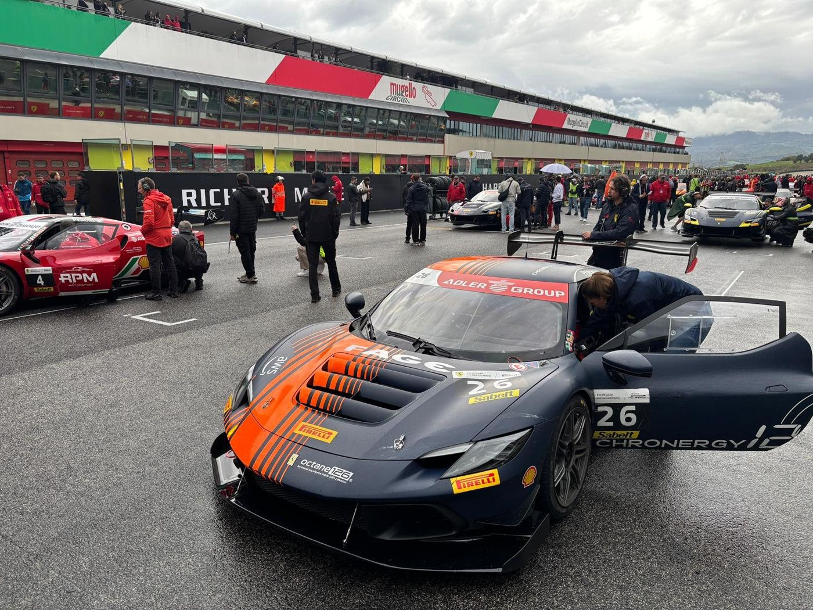

Race engineering
Octane126
Race engineer, Ferrari Challenge Trofeo Pirelli Pro
I joined as part of a larger engineering group and ended the season as the only engineer on the car. On a race weekend that meant setup, strategy, tyre windows, pit stop timing and the debriefs with Björn. Between events it meant running the six-person crew and the logistics around it: getting the truck ready, cross-border paperwork, schedules.
- Built setup proposals from the track, the conditions and the driver's feedback, using a setup wizard I adapted to the car.
- Worked on the car model: suspension pick-up points, motion ratios, gear ratios, engine curves and mass.
- Wrote a Python stint report so the data was ready before the next run (more below).
| Pos | Circuit | Class |
|---|---|---|
| P1 | Mugello | Trofeo Pirelli Pro |
| P2 | Mugello | Trofeo Pirelli Pro |
| P3 | Barcelona | Trofeo Pirelli Pro |
| P2 | Monza | Trofeo Pirelli Pro |
